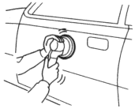
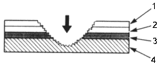
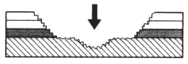
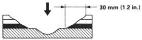
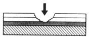
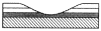

- Featheredging
NOTE
- The paint film damaged area should be sanded flat and smooth.
- If this is not done correctly the end results will not be acceptable.

Damage to metal surface:
- Sand the damaged area flat and smooth.
| Use the disc sander and #60~#80 disc paper. |

- Top coat
- Intermediate coat
- Undercoat
- Metal surface
| Use the double action sander and #60~#80 disc paper. |

- Sand the area larger than the damaged area.
| Use the double action sander and #180~#240 disc paper. |

- If double action sander is not available, use a rubber pad and wet or dry sandpaper.
| Use the flexible block and #280, #340, #400, #600 sandpaper. |
Damage to undercoat, intermediate coat and top coat:
Sand the damage area flat and smooth
| Use the double action sander and #180~#240~#320 disc paper. |

- Preparation of metal surface
Remove all corrosion from the damaged area.
| Use a product that removes corrosion. |

- Air blowing/degreasing
| Use alcohol, wax and grease remover. |